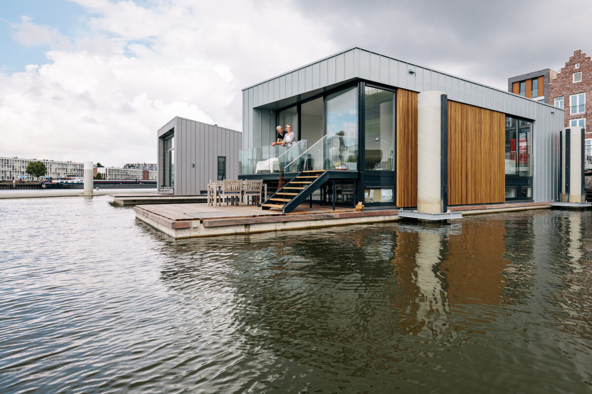
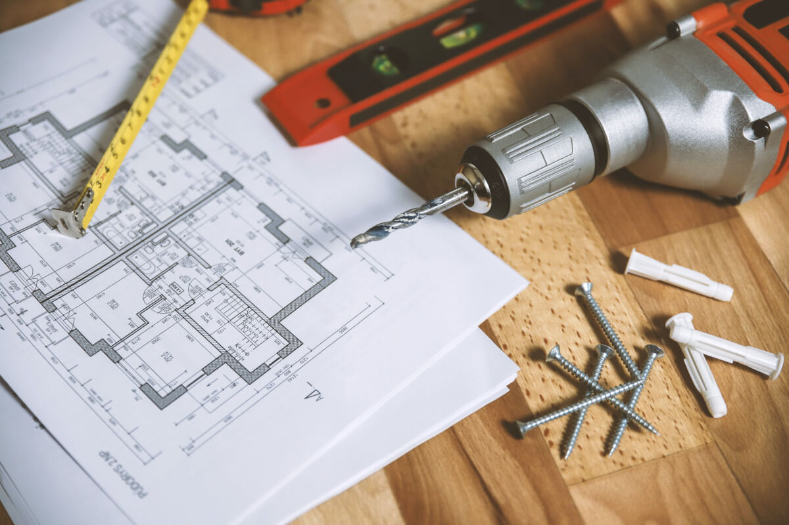

<div class="sidebar sticky-top">
  <h3 class="sidebar-title">Recent Posts</h3>
  <div class="sidebar-item recent-posts">
    <div class="post-item clearfix">
      
      <h4>
        <a href="blog-single.html">Czy da się mieszkać w kontenerach?</a>
      </h4>
      <time datetime="2020-01-01">Jan 1, 2020</time>
    </div>
    <div class="post-item clearfix">
      
      <h4>
        <a href="blog-single.html"> Czy warto inwestować w domy na wodzie? </a>
      </h4>
      <time datetime="2020-01-01">Jan 1, 2020</time>
    </div>
    <div class="post-item clearfix">
      
      <h4>
        <a href="blog-single.html">Przygotowania do remontu krok po kroku</a>
      </h4>
      <time datetime="2020-01-01">Jan 1, 2020</time>
    </div>
    <div class="post-item clearfix">
      
      <h4>
        <a href="blog-single.html"
          >Jak uniknąć błędów przy układaniu płytek ceramicznych?</a
        >
      </h4>
      <time datetime="2020-01-01">Jan 1, 2020</time>
    </div>
  </div>
  <h3 class="sidebar-title">Tags</h3>
  <div class="sidebar-item tags">
    <ul>
      <li><a href="#">Inwestycja</a></li>
      <li><a href="#">Dome</a></li>
      <li><a href="#">Woda</a></li>
      <li><a href="#">Remont</a></li>
      <li><a href="#">Błedy</a></li>
      <li><a href="#">Kontener</a></li>
    </ul>
  </div>
</div>
